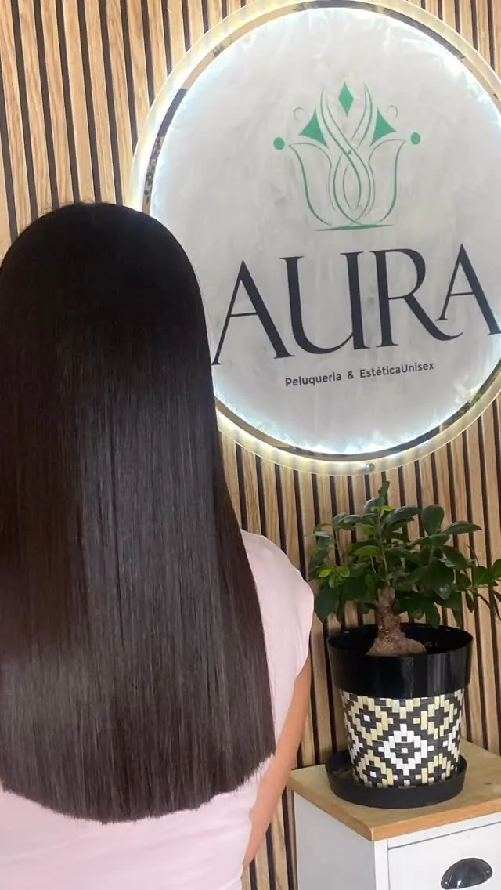
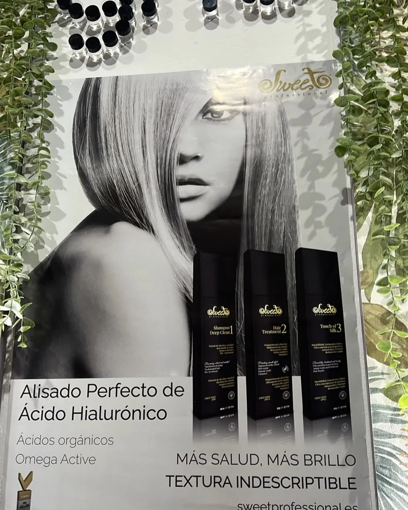
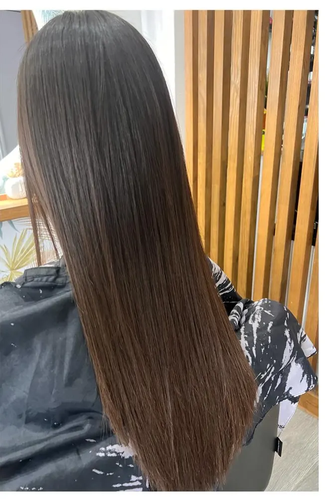

Menos encrespamiento
Una melena más manejable y un acabado pulido.

Menos encrespamiento, más tú
Para quienes buscan una melena más manejable y un acabado pulido. Antes de elegir un tratamiento de keratina, estudiamos tu cabello y hablamos del resultado que quieres conseguir.


Nuestra forma de hacerlo
«El tratamiento empieza mucho antes de aplicarlo: empieza escuchándote.»
Lo esencial
Cuatro ideas que guían este cuidado en AURA.
Una melena más manejable y un acabado pulido.
Revisamos la fibra y los servicios anteriores.
El acabado depende de tu cabello y del producto.
Instrucciones claras según la fórmula aplicada.
Qué incluye
Elige un apartado o déjate llevar: cambia solo.
A veces buscas suavidad; otras, reducir el encrespamiento o simplificar el peinado. Conocer el objetivo evita confundir un cuidado nutritivo con un tratamiento de alisado.
La denominación «keratina» puede abarcar protocolos diferentes. Te explicamos qué producto se propone, cómo se aplica y qué acabado podemos esperar en tu cabello.
Revisamos el estado de la fibra y preguntamos por decoloraciones, alisados y otros servicios anteriores. Esa información es importante aunque el tratamiento se haya realizado hace tiempo.
El largo, la densidad y el estado del cabello influyen en el tiempo de trabajo y el presupuesto. Por eso preferimos concretar el servicio tras valorar tu melena.

Una vez acordado el tratamiento, el equipo aplica el protocolo correspondiente y realiza el acabado indicado. Podrás preguntar durante la cita todo lo que necesites saber sobre tu cabello.
No prometemos un resultado idéntico para todas las texturas. El acabado y su evolución dependen del producto, del cabello de partida y de los cuidados posteriores.

Antes de salir te indicamos cuándo lavar el cabello, qué productos utilizar y qué precauciones seguir según la fórmula aplicada. No todas las keratinas tienen las mismas instrucciones.
Comenta si nadas con frecuencia, usas plancha o tienes una próxima cita de color. Organizar esos hábitos y servicios permite plantear una rutina coherente.
Tu cita
Sin sorpresas: sabrás qué ocurre en cada momento.
Suavizar, controlar el encrespamiento o buscar un efecto más liso.
Preguntamos por decoloraciones, alisados y otros servicios.
Aplicamos el tratamiento acordado y realizamos el acabado indicado.
Cuándo lavar, qué productos usar y qué evitar.
A tu medida
Cada propuesta se valora de forma personal. Consulta el tiempo y el presupuesto antes de confirmar tu cita.


El cambio, a tu ritmo
Desliza para comparar trabajos reales publicados por el salón. Cada cabello parte de un punto distinto y por eso cada propuesta se valora de forma personal.
De ondas a un liso largo y brillante
Fotografías reales de AURA con ángulos e iluminación distintos. Los resultados dependen de cada cabello.
Hecho en AURA
Sin dudas, sin prisas
Si hay algo más que quieras saber, estamos al otro lado.
Depende del protocolo, el tipo de cabello, la frecuencia de lavado y los cuidados. El equipo podrá darte una orientación concreta después de valorar tu caso.
Hay que revisar la compatibilidad y el estado del cabello. Indica tus tratamientos anteriores al reservar y acuerda el orden de los servicios con el equipo.
No siempre. El objetivo y el acabado dependen del tratamiento elegido y de tu textura. Antes de empezar aclaramos si buscas suavizar, controlar el encrespamiento o un efecto más liso.
Es una denominación que debe acompañarse de información sobre el producto concreto. Puedes consultar su composición y las indicaciones de uso en el salón; no equivale a ausencia de ingredientes químicos.
Sigue explorando

Un corte que te representa. Un color que ilumina. Una melena que apetece tocar. Empezamos escuchándote y…

Profundidad, reflejos y brillo con una elección de color personalizada. Trabajamos opciones sin amoniaco y…

Rubios que se ven cuidados, reflejos con intención y un tono que acompaña tu piel. Escuchamos lo que buscas y…
Hay un momento que es solo tuyo
Cuéntanos qué necesitas. Nosotras ponemos el tiempo, las manos y el cuidado.